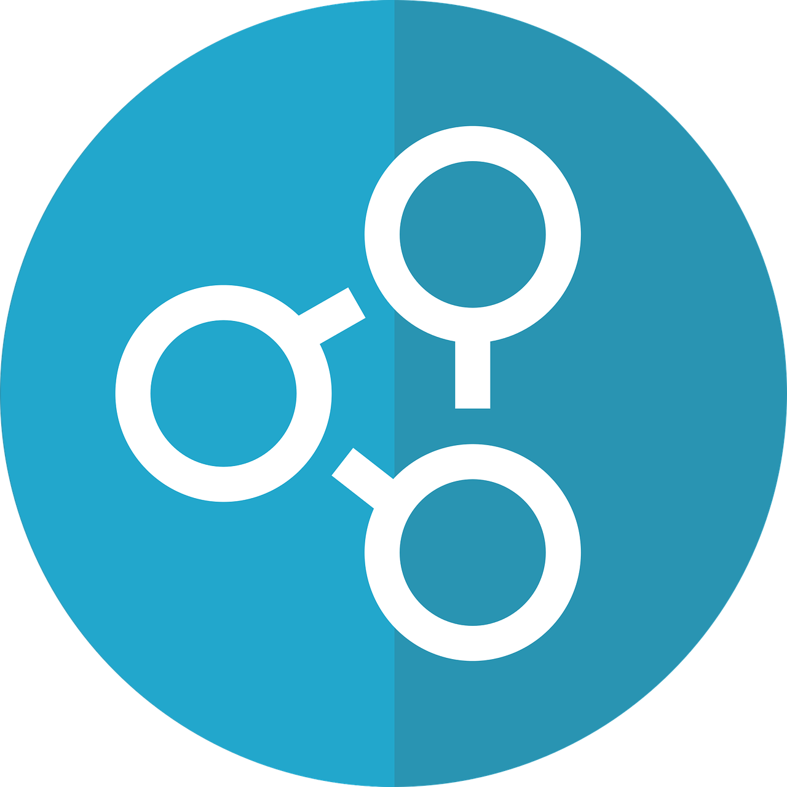

Atualizações - 
Na plataforma Code-X, as atualizações contínuas fazem parte de uma rotina bem estruturada para garantir que o sistema permaneça moderno, seguro e alinhado com as necessidades dos usuários. Essas atualizações incluem: Correções de Segurança: O código é revisado regularmente para identificar e corrigir vulnerabilidades. Isso garante que uma plataforma esteja protegida contra ameaças emergentes. Melhorias de desempenho realizadas: São ajustes no sistema para melhorar a velocidade e a eficiência, proporcionando uma experiência fluida aos usuários.
1. Novas Funcionalidades: A equipe de desenvolvimento está sempre implementando novos recursos baseados no feedback dos usuários, enriquecendo a experiência de aprendizado.
2. Atualização de Bibliotecas e Ferramentas: As dependências, bibliotecas e frameworks usados na plataforma são mantidos atualizados para acompanhar os avanços tecnológicos. 3. Manutenção Preventiva: Mesmo sem problemas visíveis, a plataforma passa por verificações regulares para prevenir falhas futuras. 4. Aprimoramentos de Design e Usabilidade: O layout e a interface são revisados periodicamente para garantir que a navegação seja intuitiva, acessível e agradável. Essas atualizações não são apenas reativas, mas também proativas, refletindo o compromisso do Code-X em oferecer uma plataforma de ensino confiável e sempre inovadora. Isso garante que os usuários tenham a disposição o que há de mais em tecnologia educacional avançada.